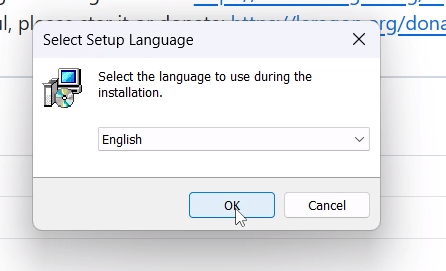
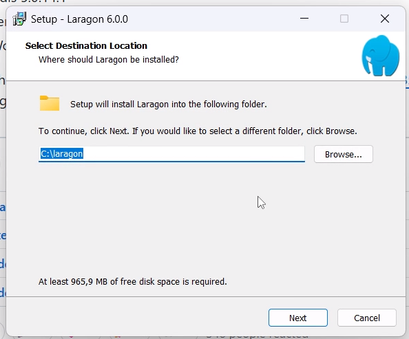
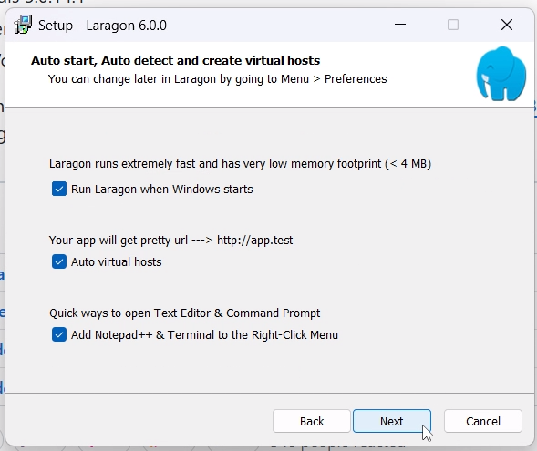
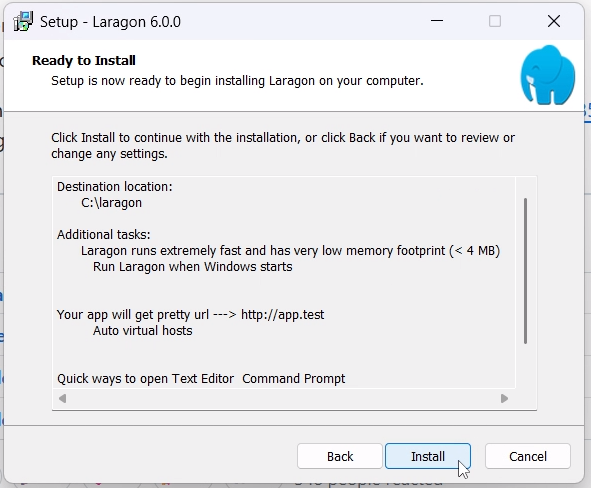
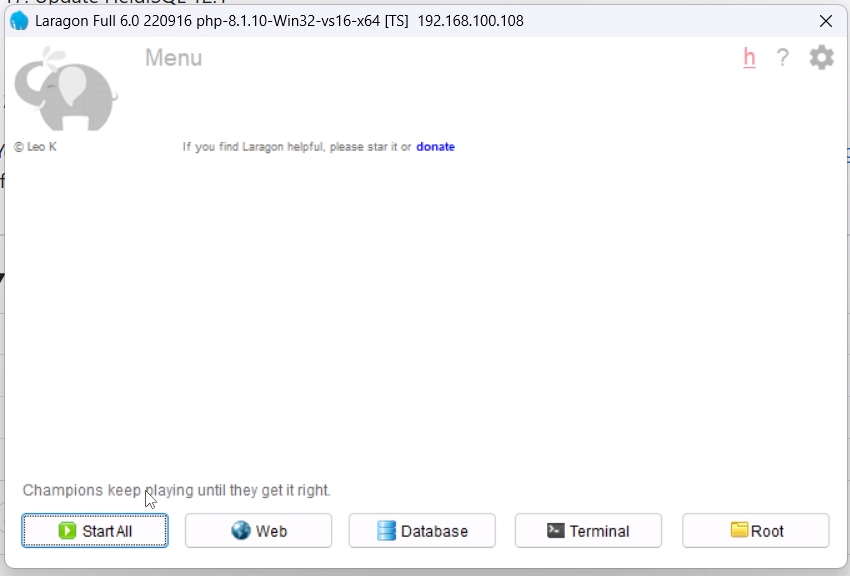
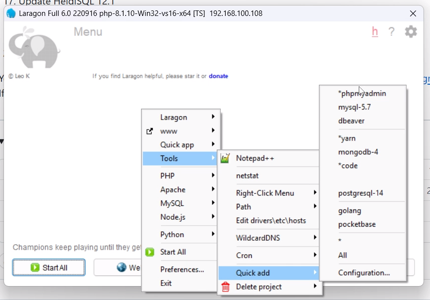
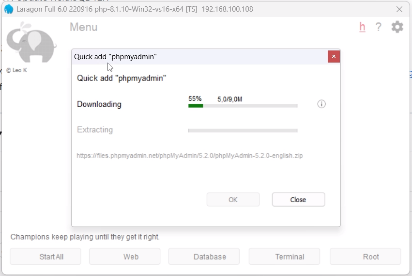
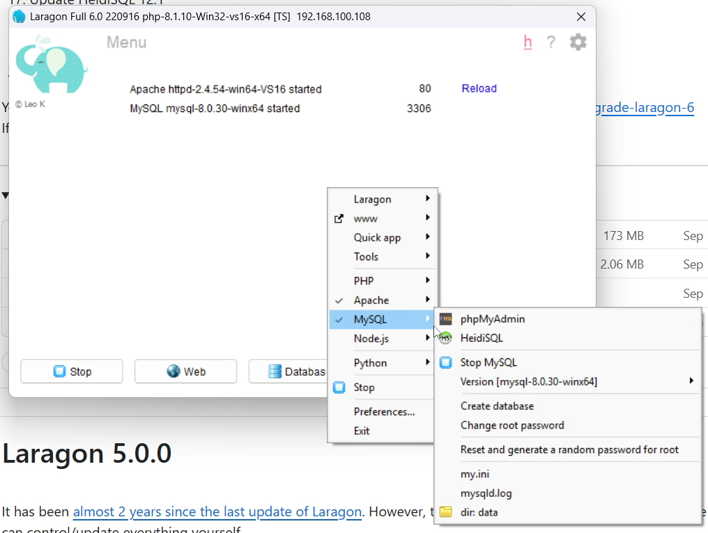
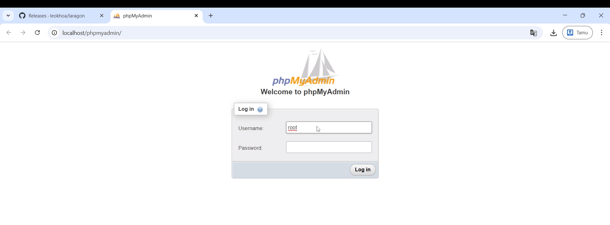
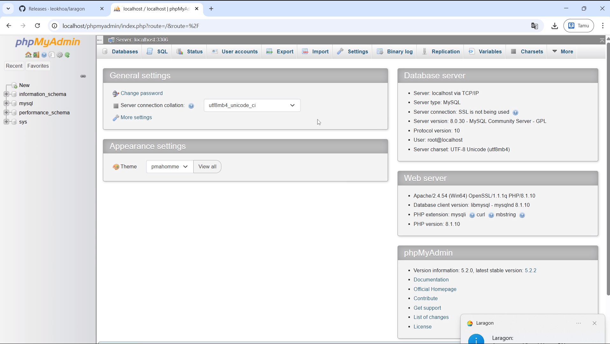

Halo, para pejuang kode!
Sering merasa sedikit ribet saat harus setup local server untuk proyek web baru? Harus install Apache, PHP, MySQL satu per satu, lalu konfigurasinya kadang bikin pusing. Nah, di artikel kali ini, saya mau bagikan cara super mudah untuk menyiapkan development environment yang powerful hanya dalam beberapa menit menggunakan Laragon.
Kita akan menggunakan Laragon versi 6, yang merupakan versi terakhir yang sepenuhnya gratis, dan tentu saja kita akan lengkapi dengan phpMyAdmin untuk mengelola database kita dengan mudah.
Install Laragon
Langkah 1: Mengunduh File Installer dari GitHub
Pertama, kita perlu mengunduh file masternya. Jangan khawatir, saya sudah siapkan link-nya agar teman-teman tidak tersesat.
- Buka browser favorit kalian dan langsung menuju ke halaman rilis Laragon di GitHub: https://github.com/leokhoa/laragon/releases
- Cari rilis untuk versi Laragon 6.0.0.
- Unduh file bernama
laragon-wamp-6.0.0.exe. File ini adalah installer utama yang akan kita gunakan.
Langkah 2: Menjalankan File Installer
Setelah file terunduh, saatnya kita jalankan file installer tersebut.
- Jalankan file
laragon-wamp.exeyang sudah diunduh. - Pilih bahasa instalasi (disarankan English), lalu klik OK. 
- Nah, ini bagian penting! Saat diminta memilih lokasi instalasi, biarkan saja di C:\laragon. Kenapa? Ini untuk menghindari masalah permission yang sering terjadi di Windows dan akan membuat hidup kita lebih mudah nantinya. 
- Pada jendela opsi berikutnya, teman-teman bisa biarkan semua centang default aktif. Opsi seperti "Add Notepad++" dan "Add to context menu" itu sangat membantu! 
- Klik Next, lalu Install, dan biarkan prosesnya berjalan hingga selesai. 
Install phpMyAdmin
Setelah laragon terinstall langkah selanjutnya yaitu menginstall phpMyAdmin melalui laragon
- Buka laragon yang sudah diinstall tadi 
- Klik Menu lalu pilih Quick app lalu pilih phpMyAdmin 
- Tunggu proses installasi hingga selesai 
- Untuk mengakses phpMyAdmin bisa melalui menu di laragon atau bisa juga melalui browser dengan mengetikkan alamat http://localhost/phpmyadmin/ 
- Untuk login ke phpMyAdmin, gunakan username: root dan password dikosongkan saja (default) 
- Selesai, sekarang kalian sudah bisa mengelola database dengan mudah menggunakan phpMyAdmin! 
untuk selengkapnya bisa kunjungi video youtube saya di Tutorial Install phpMyAdmin via Laragon
Dan itu dia! Dalam beberapa langkah sederhana, kita sudah berhasil menyiapkan lingkungan pengembangan web yang lengkap dengan Laragon dan phpMyAdmin. Sekarang, kalian bisa fokus pada coding tanpa harus pusing dengan setup server.
Jika ada pertanyaan atau butuh bantuan, jangan ragu untuk tinggalkan komentar di bawah. Selamat mencoba dan semoga sukses dengan proyek web kalian!
Salam hangat,